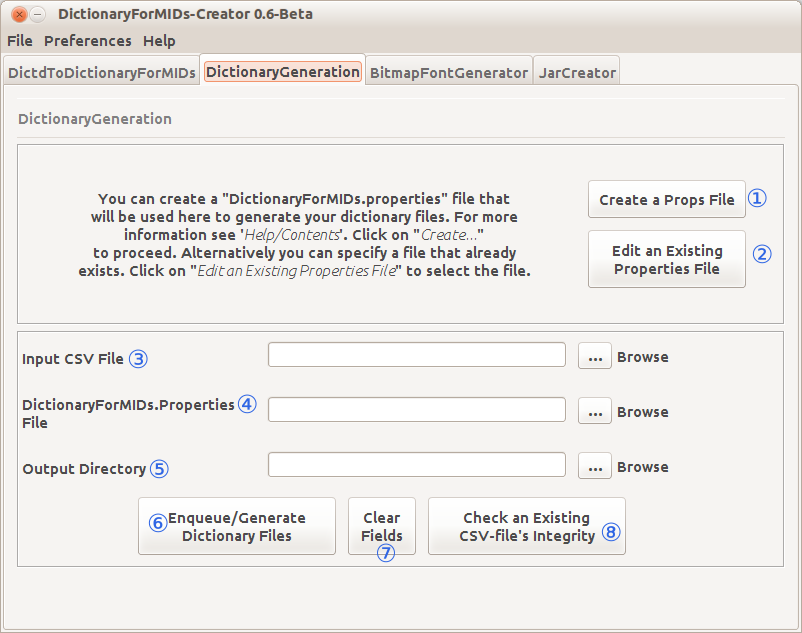

Welcome to the DictionaryForMIDs-Creator Documentation.
Below you will find a quick guide to the GUI components of DfM-Creator.
The picture below is a screen shot of the the menu bar and the tabs.
This is the GTK+ Look and Feel (on Ubuntu Linux 12.04).
There are four tabs, each one represents one DictionaryForMIDs tool:
- DictdToDictionaryForMIDs
- DictionaryGeneration
- BitmapFontGenerator
- JarCreator
Above the tabs are the menu bar. Each menu and its items represent some of the options
offered by the tab of the same name, i.e the JarCreator menu's items have the same
name and functionality as the buttons of the JarCreator tab.
The complete DictdToDictionaryForMIDs tab.

- Database Name: This is where you put the name of the database (without the .ini extension).
- Database Directory: This is the path to the directory containing the database files.
- Output File Directory: This is the path to the location where the output file will be written to.
- Encoding: Here you choose the encoding of the output file.
- Choose a Separator Character: Here you choose the separator character for the output file.
- Switch Languages: Choose if you want to switch the languages.
- Keep Tab And New Line Chars: Choose here, if you would like to keep the tab and new line characters.
- Remove Square Bracket Contents: Choose if you would like to keep the text within square brackets.
- Clear Fields: Reset all the settings and delete the values entered.
- Proceed: Proceed to the conversion process.
The complete DictionaryGeneration tab.

- Create: This takes you to the PropertiesEditor window which enables you to create a properties file.
- Edit an Existing Properties File: This enables you to edit a properties file with PropertiesEditor.
- Path to The Input CSV File: This is where you put the path to the input comma-separated-value (CSV) file.
- Properties File's Directory: Put here, the location to the properties file's directory.
- Destination Directory: This is the path to the destination directory.
- Generate Dictionary Files: Click here to proceed to the dictionary generation process.
- Clear Fields: Reset all the settings and delete the values entered.
- Check an Existing CSV File's Integrity: This takes you to a window that will check a CSV file for errors.
The complete BitmapFontGenerator tab.

- Path to the Font File: Where the font file is located.
- Path to the Dictionary: Where the dictionaryXXX.csv files' directory is located.
- Font Size (Points): Choose a size here.
- Clip Pixel From Top: choose a number here.
- Clip Pixel From Bottom: choose a number here.
- Generate Bitmap Fonts: Click here to proceed to the bitmap font generation.
The complete JarCreator tab.

- DictionaryForMIDs.properties and CSV files' Directory: Indicate the full path to the properties and CSV files.
- Empty DictionaryForMIDs.jar/jad Files' Directory: Indicate the full path for the empty DfM.jar/jad Files
- Output Directory: Put here, the path to the location of the directory that will hold the output file.
- Pack "CSV" Files in the Empty DfM.jar File: Click here to proceed to the DictionaryForMIDs.jar/jad files creation
- Create Jar/Jad Files: Reset all the settings and delete the values entered.
Table of Contents
- Quick Tour
- DictdToDictionaryForMIDs
- DictionaryGeneration
- BitmapFontGenerator
- JarCreator
- Complete Documentation
- Important changes notes
- Setting up a new dictionary
- DictionaryForMIDs.properties file
- DictionaryUpdate
- DictionaryUpdate - Advanced
- Normation - Available classes
- Normation - Advanced
- Multiple source dictionaries
- Content declarations
- Generation the Dictionary file
- Creating DictionaryForMIDs.jar Manually